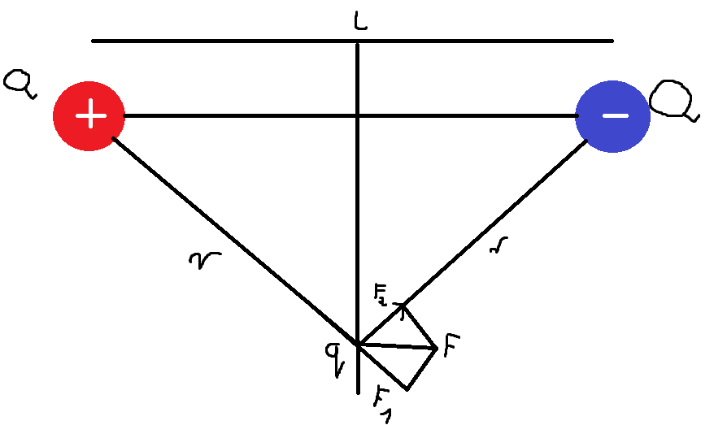
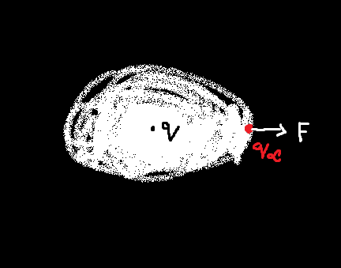
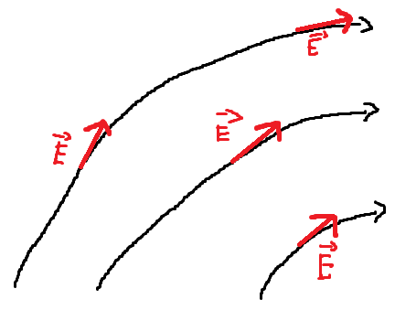
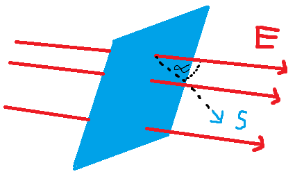
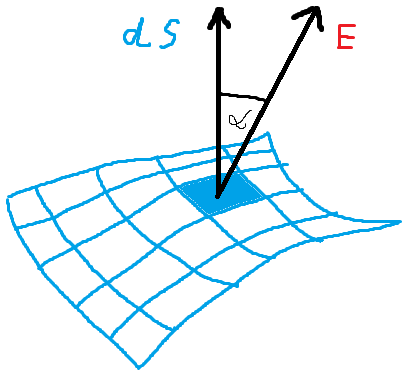

Istnienie ładunków można stwierdzić w najprostszym znanym nam powszechnie zjawisku elektryzowania się ciał. Doświadczenie pokazuje, że w przyrodzie mamy do czynienia z dwoma rodzajami ładunków: dodatnimi i ujemnymi, oraz że ładunki jednoimienne odpychają się, a różnoimienne przyciągają się.
W układzie SI jednostką ładunku jest kulomb (C). jest to ładunek przenoszony przez prąd o natężeniu 1 ampera w czasie 1 sekundy; C = A * s
Również doświadczalnie stwierdzono, że żadne naładowane ciało nie może mieć ładunku mniejszego niż ładunek elektronu lub protonu. Ładunki te równe co do wartości bezwzględnej nazywa się ładunkiem elementarnym \(e = 1.6 * 10^{-19} \ C \). Wszystkie realnie istniejące ładunki są wielokrotnością ładunku e. Jeżeli wielkość fizyczna, taka jak ładunek elektryczny, występuje w postaci określonych "porcji" to mówimy, że wielkość ta jest skwantowana.
Siła Coulombowska podlega trzeciej zasadzie dynamiki Newtona: siły oddziaływania dwóch ładunków punktowych są sobie równe co do wartości bezwzględnej, lecz przeciwne zwrócone wzdłuż prostej łączącej te ładunki. \[\displaystyle \begin{array}{1} k = \frac{1}{4\pi\varepsilon_{0}} = 9,0 \ * \ 10^{9} \ \frac{N * m^2}{C^2} \\ \varepsilon_{0} = 8,85418 \ * \ 10^{-12} \ \frac{C^2}{N * m^2} \\ F = k \frac{q_1 \ q_2}{r^2} \end{array}\] w układzie SI jednostką ładunku jest kulomb (C) \(1e = 1,602 * 10^{-19} \ C \) Oddziaływanie ładunków zależy od ośrodka w jakim znajdują się ładunki. Fakt ten uzwględniamy wprowadzając stałą materiałową \(\varepsilon_r\) zwaną względną przenikalnością elektryczną ośrdoka, tak, że prawo Coulomba przyjmuje postać \[F = \frac{1}{4\pi\varepsilon_0\varepsilon_r}\frac{q_1 \ q_2}{r^2}\] Wartością \(\varepsilon_r\) dla wybranych substancji zestawiono w tabeli Tab. Względne przenikalności elektryczne
| ośrodek | \(\varepsilon_r \) |
|---|---|
| próżnia | 1 |
| powietrze | 1,0006 |
| parafina | 2 |
| szkło | 10 |
| woda | 81 |
Gdy mamu do czynienia z kilkoma naładowanymi ciałami, siłę wypadkową, analogicznie jak w przypadku siły grawitacyjnej, obliczamy dodająć wektorowo poszczególne siły 2-ciałowe.
Dipol elektryczny składa się z dwóch ładunków +Q i -Q oddalonych od siebie i l. Obliczmy siłę jaka jest wywierana na dodatni ładunek q umieszczony na symetralnej dipola.

Centralne pole elektrostatyczne wokół ładunków.
Jeżeli źródłem pola jest ładunek punktowy, to linie rozchodzą się promieniście, sa one zwrócone do ładunku dodatniego. W przypadku ładunku ujemnego są zwrócone do niego. Zatem linie zaczynają się na ładunkach dodatnich, a kończa się na ujemnych.
Jest to pole wektorowe. Pole elektryczne jest to przestrzeń, w której na ciała majace ładunek działają siły.
Ładunek q wytwarza pole elektryczne w otaczającej go przestrzeni.
Pole wytworzone przez ten łądunek działa na \(q_\alpha \). Przejawia się to jak siła F, której działania doznaje ten ładunek.

Pole elektryczne odgrywa rolę pośrednika w przenoszeniu oddziaływań pomiędzy ładunkami:
\(\text{ładunek} \leftrightarrow \text{pole} \leftrightarrow \text{ładunek}\)
Polem elektrczynym jest nazywana właściwość przestrzeni sprawiająca, że na umieszczone w niej naładowane ciało działa siła, która zależy od ładunku zgromadzonego w ciele oraz natężenia pola w miejscu położenia ciała. Pole elektryczne występuje w otoczeniu ciała naładowanego, które jest źródłem pola.
Definiujemy natężenie pola elektrycznego jako siłę działającą na ładunek q(umieszczony w danym punkcie przestrzeni) podzieloną przez ten ładunek.
Tak więc, żeby zmierzyć natężenie pola elektrycznego E w dowolnym punkcie przestrzeni, należy w tym punkcie umieścić ładunek próbny(ładunek jednostkowy) i zmierzyć wypadkową siłę elektrczyną F działającą na ten ładunek. Należy upewnić się czy obecność ładunku próbnego nie zmienia położeń innych ładunków
\(E=\frac{\vec{F}}{q_0}\)
Przyjęto konwencje, że ładunek próbny jest dodatni, więc kierunek wektora E taki sam jak ładunek działającej na ładunek dodatni. Jeżeli pole elektryczne jest wytworzone przez łądunek punktowy Q to zgodnie z prawem Coulomba siła działająca na ładunek próbny q w odległości r od tego ładunku wynosi:
\[\vec{F}(\vec{r})=\frac{1}{4\pi\varepsilon_0}\frac{Qq}{|\vec{r}|^3}\vec{r}\]
Ładunek próbny nie może zaburzać pole, czyli musi być znacznie mniejszy od ładunku wytwarzającego pole. Jest porządane, by \(q_0 \rightarrow 0\), przy czym nawet elementarny ładunek elektronu (\(1,6*10^{-19} \ \text{C}\)) byłby zbyt duże w przypadku podobnie małego ładunku źródłowego.
Jednostką natężenia pola jest \(\frac{\text{N}}{\text{C}}\). Ponieważ \(q_0\) jest wielkością skalarną, zaś F = wektorem, E jest wektorem skierowanym zgodnie z F.
można uzyskać bardziej praktyczną zależność:
\[E=k\frac{q}{r^2}\]
która okresla natężenie pola w odległości r od ładunku q wytwarzającego to pole.
\[\displaystyle{ \begin{array}{1} \vec{E}=\frac{\vec{F}}{q} \\ \vec{E}(\vec{r})=\frac{1}{4\pi\varepsilon_0}\frac{Q}{ | \vec{r} | ^3}\vec{r} \\ E(\vec{r})=\frac{1}{4\pi\varepsilon_0}\frac{Q}{r^2} \\ \vec{F}(\vec{r})=\frac{1}{4\pi\varepsilon_0}\frac{Qq}{|\vec{r}|^3}\vec{r} \end{array} }\]
Linie pola pozwalają na poglądowe przedstawienie pola. Linia pola to linia, do której wektor natężenia pola jest styczny w każdym jej punkcie. Ma ona zwrot zgodny ze zwrotem wektora natężenia.

Zależność pomiędzy liniami sił a awektorem natężenia pola elektrycznego jest następująca:
Strumień \(\varPhi\) pola elektrycznego przez powierzchnię S definiujemy jako iloczyn skalarny wektora powierzchni S i natężenia pola elektrycznego E
\[\varPhi=E*S=ES\cos\alpha\]

\[\text{d}\varPhi=E*\text{d}S\cos\alpha\]

Strumień \(\varPhi\) natężenia pola elektrycznego \(\vec{E}\), przenikający przez zamknięta powierzchnię S, ograniczającą obszar o objętości V jest proporcjonalny do ładunku elektrycznego Q zawartego w tym obszarze(objętości). \[\varPhi=\int_{S}\vec{E} \ d\vec{S}=\frac{1}{\varepsilon_0}\int_{V}\rho \ dV=\frac{Q}{\varepsilon_0}\] przy czym:
Różnica energii potencjalnej \(E_p\) pomiędzy punktami A i B jest równa pracy(ze znakiem minus) wykonanej przez siłę zachowawczą przy przemieszczaniu ciała od A do B \[E_{pB}-E_{pA}=W_{AB}=-\int^{B}_{A}Fdr\] Dla pola elektrycznego energia potencjalna wynosi: \[E_{pB}-E_{pA}=-W_{AB}=-\int^{B}_{A}Fdr=-q\int^{B}_{A}Edr\] gdzie E jest natężeniem pola elektrycznego. Siły elektryczne są siłami zahcowaczymi i wartość pracy nie zależny od wyboru drogi pomiędzy punkami A i B. Jeżeli teraz podobnie jak dla grawitacyjnej energii potencjalnej przyjmiemy, że energia potencjalna pola elektrycznego jext równa zero w nieskończoności, to wówczas energia potencjalna w danym punkcie r pola elektrycznego jest dana wzorem: \[E_p(r)=-q\int^{r}_{x}Edr\]
Praca W, która jest potrzebna, by przesunąć ładunek próbny \(q_0\) z nieskończoności do określonego punktu w polu elektrycznym wytwarzanym przez ładunek q, okresla potencjał
\[U=\frac{W}{q_0}\]
czyli wielkość skalarną, której jednostką jest wolt (V), tożsamy z ilorazem dżulai kulomba (\(\frac{J}{C}\))
Przyjmując inny punkt widzenia, można rozpatrywać przemiesczenie ładunku próbnego między dwoma punktami pola elektrycznego wytwarzanego przez ładunek q. Wtedy interesująca staje się róznica potencjałów w wytwarzanych punktach, czyli napięcie elektryczne U.
Ponieważ praca jest równa sile pomnozonej przez przemieszczenie, łatwo można wykazać, że wyrażenie:
\[U=k\frac{q}{r}\]
określa napięcie między środkiem ładunku q a punktem odległym od niego o r.
Biorąc pierwszą pochodną z równania można wyprowadzić następujący związek:
\[E=-\frac{\text{d}U}{\text{d}r}\]
z którego wynika, że natężenie pola elektrycznego jest tożsame z gradientem potencjału i można mierzyć w \(\frac{V}{m}\). Znak minus oznacza, że E jest skierowane przeciwnie do \(\frac{\text{d}U}{\text{d}r}\).
\[U=\int^{b}_{a} \ dU=-\int^{b}_{a}E \ dr=U_b-U_a\]
gdzie a i b oznaczją punkty pola odległe o r, a \(U_a\) i \(U_b\) - potencjały w tych punktach. Jeżeli a leży w nieskończoności, czyli \(U_a = 0 \text{V}\), co wynika z podstawienia \(r \rightarrow \infty\)
\[U = \int^{b}_{a}\ Edr=U_b\]
W przypadku pola jednostkowego \(U = Er\), czyli \(E = \frac{U}{r}\).
Do opisu pola elektrycznego lepiej posługiwać się energią potencjalną przypadającą na jednostkowy ładunek, czyli potencjałem elektrycznym.
Potencjał elektryczny definiujemy jako energię potencjalną pola elektrycznego pomnozoną przez jednostkowy ładunek.
\[V(r)=\frac{E_p(r)}{q}=\frac{W}{q}\]